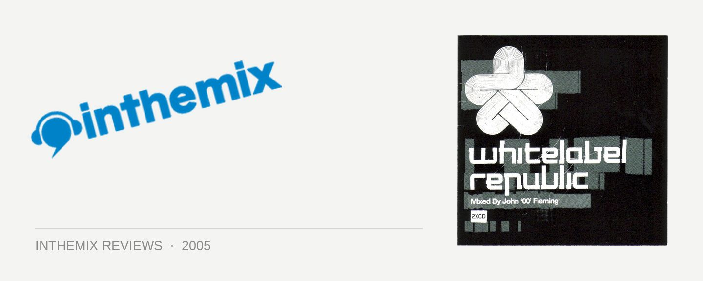

Various Artists - White Label Republic, Mixed by John '00' Fleming
(Velocity/Shock)
John ‘OO’ Fleming’s has executed a clever career reinvention in the last 12 months. Bored to tears with the direction trance was heading in, he undertook a rebirth as a top-shelf psytrance DJ, earning himself new fans and giving the genre a high-profile spokesman. Always one to champion new sounds, the focus of Fleming’s Whitelabel series falls squarely on giving exposure to unsigned acts, and the latest instalment is again compiled almost exclusively of unreleased material from around the globe.
The first CD keeps the spotlight off Flemming’s new psytrance direction for the moment, focussing instead on some very deep, progressive and tribal trance. It’s the sort of territory where Anthony Pappa and James Holden feel right at home, but Fleming isn’t quite up to the task. That said, his track selection is as impressive as ever, with a great selection of unknown producers plus a few familiar faces. The tone of the music begins very deep, verging on the ambient, before Fleming ramps it up into pumping, power progressive then dropping a welcome touch of psytrance as it moves towards its conclusion.
If the first CD is the starter, then the second is most definitely the main course, and it serves up some deliciously tripped out trancey treats. Beginning with a slow build to a massive psychedelic bang with Analogue Haste, for trance fans unfamiliar with the psychedelic variation, the rhythms sound fresh, intriguing and intoxicating. The driving basslines, melodies and beats are there to keep you grooving, but the soundscapes underneath veer well into mindfuck territory. Whirloop’s contribution in particular casts a powerful spell over the listener, yanking them down into the digital slipstream with one of the most hypnotically crafted successive breakdowns this side of 2005. And for what constitutes a bunch of white label releases, there is certainly some impressive production talent on the CD.
But as fresh as psytrance sounds to the uninitiated, it works best in small doses. The distinctive sounds can grow monotonous: the same shrill acid choruses, the same pulsing basslines and the same tripped-out samples. And while there are some amazing sounds on offer, a lack of proper pacing from Fleming means the energy remains at a constant level throughout, with the mix loosing the listener’s attention and really starting to drag on in parts. Fleming has a real talent for searching out the hidden gems, but his ability to construct a mix isn’t up on the same level. He’s no Digweed, basically.
Fleming has his heart in the right place with his support for unsigned acts, but while he has legions of fans around the world, he has failed to reach the lofty heights attained by the other trance jocks. Nevertheless, it appears Fleming has really found his groove with psytrance. It’s hard to say whether it’ll cut it with the existing psytrance massive, but for fans of traditional trance looking to spice up their listening pleasures a little, you can’t go wrong. The pacing and flow of the mix may let him down, but for the sake of the kick-ass track selection, White Label Republic is well worth the purchase. It’s a struggle to hang in there til the end of the mix sometimes, but it’s well worth it to hear some of the tasty hidden treats that Fleming has dug up from obscure corners from around the globe.